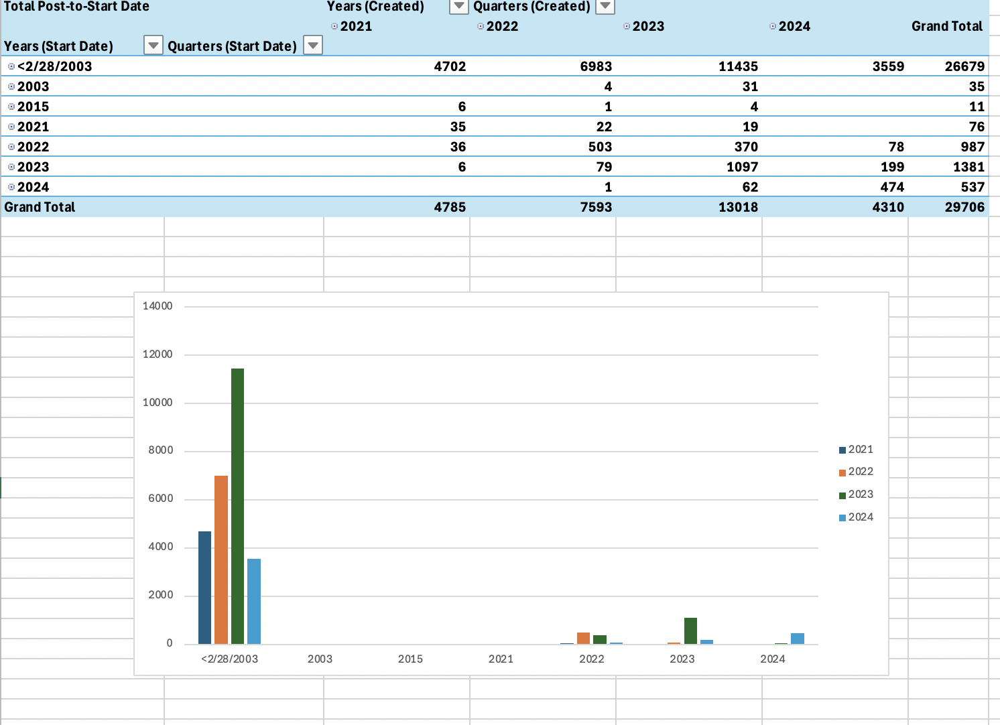
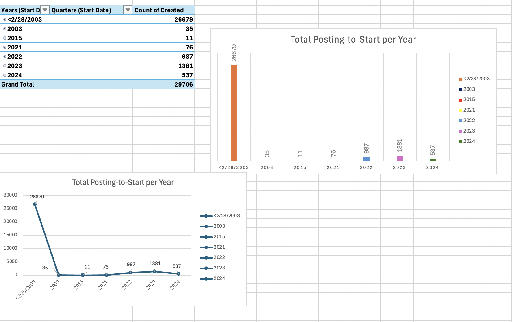
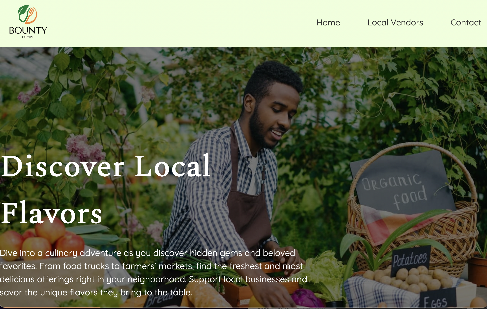
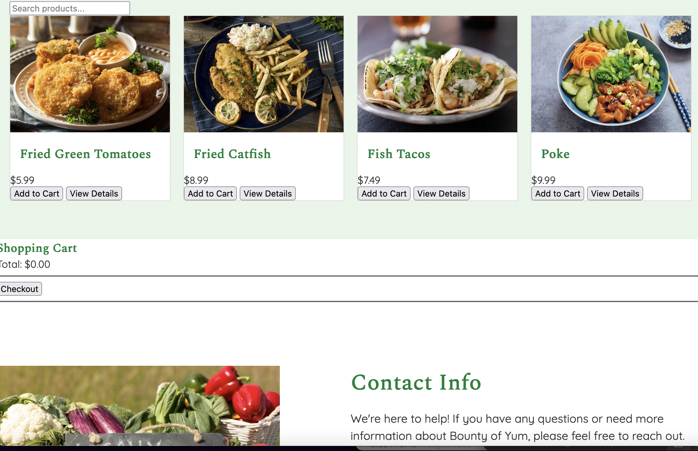
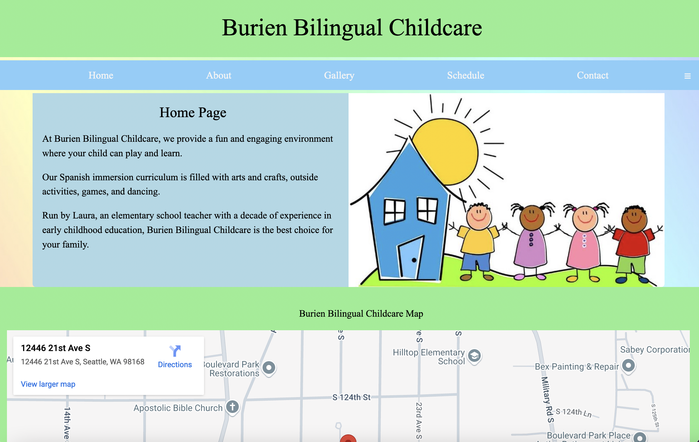
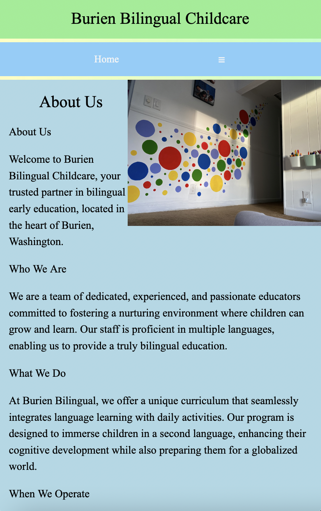

My Projects
Explore some of my recent data analytics and web development projects that showcase my skills in data visualization, analysis, and website creation.
2023 Termination Visualizations by Location, Quarter, and Year

Quarterly Termination Analysis Across Campuses
Developed a comprehensive visualization of termination data for the year 2023 across different campuses and quarters. This project uses various charts, including pie charts, treemaps, and bubble charts, to represent the distribution and trends of terminations.
- Analyzed termination rates by quarter and campus location
- Visualized data using color-coded charts to represent termination volumes
- Provided insights into patterns and trends in termination data
Total Posting-to-Start per Year

Analysis of Posting-to-Start Metrics from 2003 to 2024
Conducted a detailed analysis of the posting-to-start process over the years. This project tracks the total number of posts to start dates, analyzing trends and providing visual insights.
- Tracked posting-to-start metrics from 2003 to 2024
- Visualized data using bar charts and line graphs to highlight trends
- Provided a comprehensive view of posting-to-start patterns across years
Total Post-to-Start Date Analysis

Yearly Post-to-Start Date Metrics
Analyzed and visualized post-to-start date metrics across multiple years, providing insights into patterns and trends over time.
- Detailed analysis of post-to-start metrics by year
- Visualizations include bar charts to compare yearly data
- Identified key trends in post-to-start processes
Local Vendors Website: Bounty of Yum


Online platform conneting local vendors with community members
To provide an intuitive and mobile-friendly experience, where vendors can showcase their products, and customers can discover and support local businesses. Key features include detailed vendor profiles, comprehensive product listings, and secure shopping cart functionality.
- MongoDB In our project, MongoDB serves as the database for storing and managing information such as vendor profiles, product listings, and user details. The backend used MongoDB to: Store Product Data: Product names, images, descriptions, and prices. Manage Users: User authentication details and purchase history. Track Orders: Real-time updates of stock levels and completed transactions. MongoDB’s flexible JSON-like structure allows seamless integration with the frontend, represented in the project’s HTML files, enabling dynamic content updates.
- Postman We used Postman to validate the website’s API functionality, particularly for operations related to the shopping cart and checkout. Postman enabled us to: Test GET Requests: For fetching vendor and product data displayed on pages like index.html and local-vendors.html (files). Test POST Requests: To process checkout operations, such as adding items to the cart or saving order details in the backend. Debug API Errors: Postman helped identify any inconsistencies in data flow between the frontend (HTML forms) and backend logic.
- Checkout Process The checkout process implemented in the project ensures a smooth user experience, likely following this flow: Cart Review: Users add items to their cart, with prices dynamically displayed using the JavaScript functionality in main.js. Form Submission: On confirming the order, data from the cart form is submitted to the backend for processing. Order Validation: The backend, potentially connected to MongoDB, verifies stock availability and processes the order. Payment Integration: While direct payment gateways are not included in the files, placeholders or simulated actions might be part of the JavaScript for testing purposes. Confirmation: The user receives a success message, and the vendor database updates the stock to reflect the purchase.
2023 Termination Visualizations by Location, Quarter, and Year


Local Childcare
Developed a website for a local childcare. It included a home page that with information about the business with google maps, an about page, gallery page, schedule page, and contact page.
- Developed dynamic, responsive websites using HTML, CSS, and JavaScript, ensuring cross-browser compatibility and mobile optimization.
- Integrated and tested RESTful APIs using Postman and Jest, enhancing application functionality and ensuring code quality.
- Deployed full-stack applications utilizing Node.js for server-side logic and MongoDB Atlas for database management in scalable cloud environments.